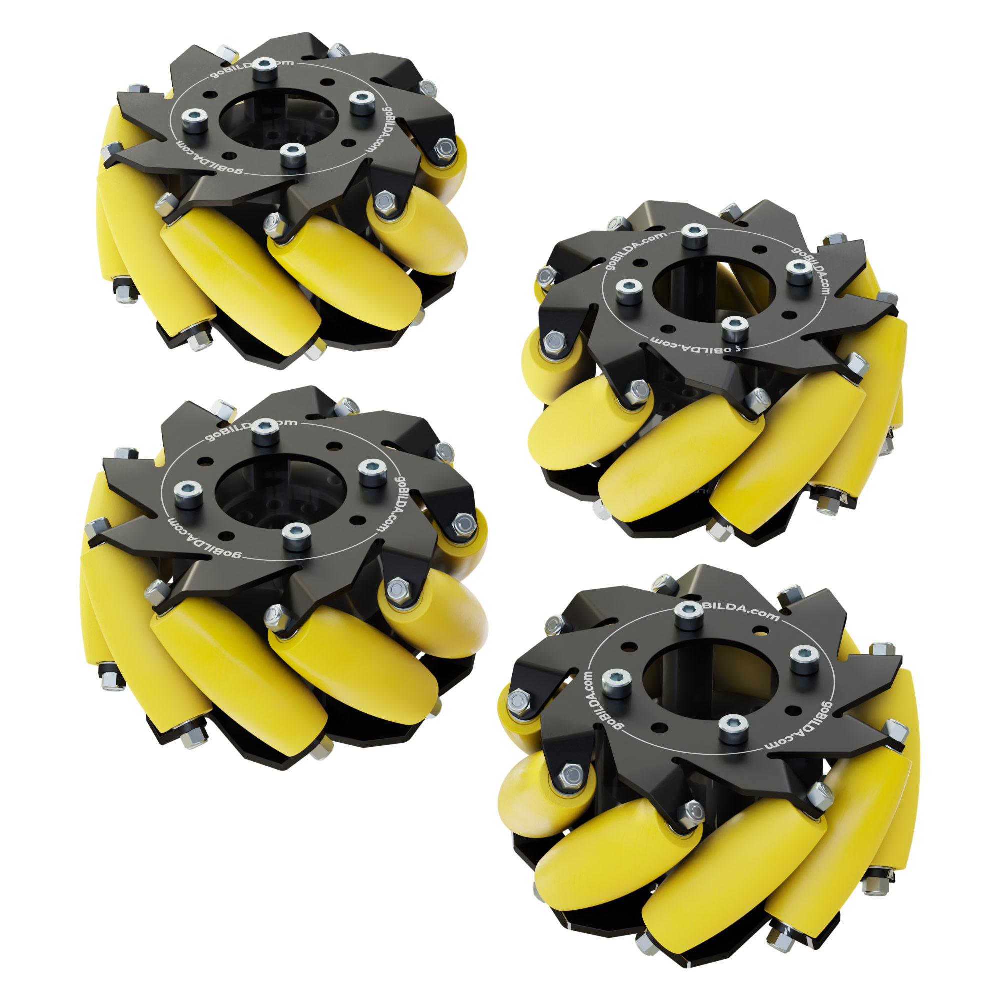
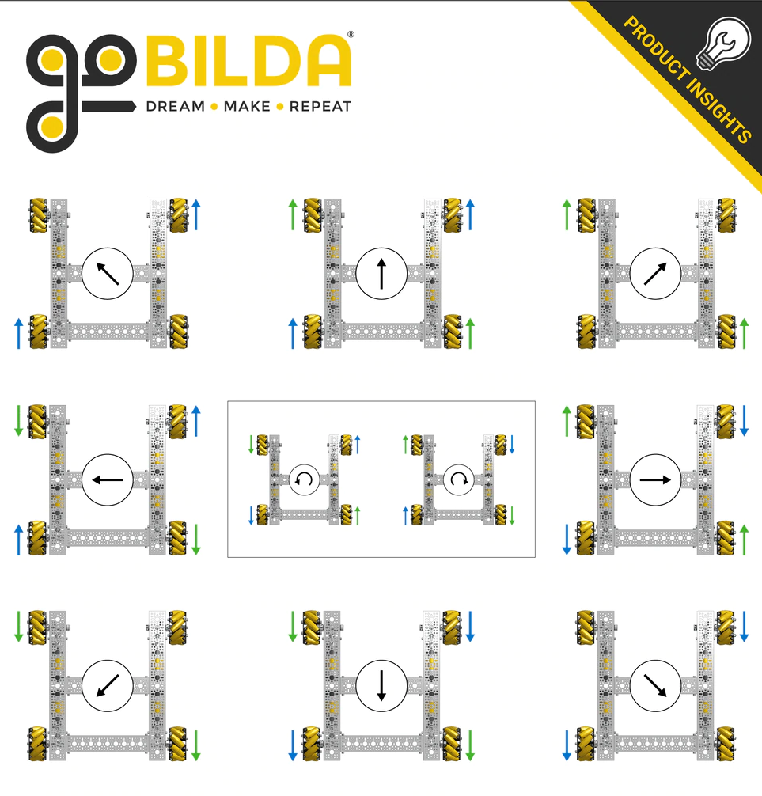
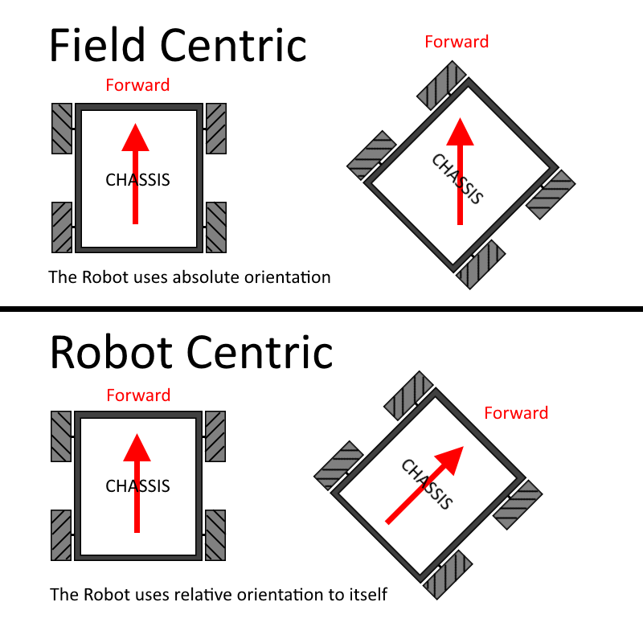

Overview - Code
- Java in Android Studio
- Robot setup - 1 Rev Hub, 1 Rev Driver Station, 1 Rev Expansion Hub
- Our code is split up into different components, with each component being worked on separately and by different people at different stages of development.
- Drive
- Odometry
- PID
- Auton (Autonomous)
- CV (Computer Vision)
Drive component
- A Mecanum drive uses special wheels with "rollers" angled at a 45 degree angle. 
- These rollers, when implemented properly, allows for holonomic movement - the ability to move in any direction while rotating. Refer to the below image for using a Mecanum drive. 
Let's take a look at the code.
// IMPORTS UP HERE
/* Initialize our drive motors */
DcMotor motorFrontLeft;
DcMotor motorBackLeft;
DcMotor motorFrontRight;
DcMotor motorBackRight;
public void mecanum(double power, double strafe, double turn) {
// Denominator is the value of the largest power output from the motors (absolute value) OR 1
// Ensures all powers maintain in the same ratio for a smooth drive
// Keeps drive power output within control of range [-1, 1]
double denominator = Math.max(Math.abs(power) + Math.abs(strafe) + Math.abs(turn), 1);
double frontLeftPower = (power + strafe + turn) / denominator;
double backLeftPower = (power - strafe + turn) / denominator;
double frontRightPower = (power - strafe - turn) / denominator;
double backRightPower = (power + strafe - turn) / denominator;
// Run motors based on calculated power outputs
motorFrontLeft.setPower(frontLeftPower);
motorBackLeft.setPower(backLeftPower);
motorFrontRight.setPower(frontRightPower);
motorBackRight.setPower(backRightPower);
}
** Remember this code is for a ROBOT-CENTRIC drive!
So, what's the difference between a Robot-centric and Field-centric drive?
Credit to team 6624 for the image
Here's our code for a Field-centric drive
public void fieldCentric(double power, double strafe, double turn) {
// We're using an IMU to measure the heading of the bot in order to counteract it in a Field-centric drive
double botHeading = -imu.getAngularOrientation().firstAngle;
// Slightly more complex trigonometry in order to account for the bot's variable heading
double rotationX = strafe * Math.cos(botHeading) - power * Math.sin(botHeading);
double rotationY = strafe * Math.sin(botHeading) + power * Math.cos(botHeading);
double denominator = Math.max(Math.abs(power) + Math.abs(strafe) + Math.abs(turn), 1);
double frontLeftPower = (rotationY + rotationX + turn) / denominator;
double backLeftPower = (rotationY - rotationX + turn) / denominator;
double frontRightPower = (rotationY - rotationX - turn) / denominator;
double backRightPower = (rotationY + rotationX - turn) / denominator;
motorFrontLeft.setPower(frontLeftPower);
motorBackLeft.setPower(backLeftPower);
motorFrontRight.setPower(frontRightPower);
motorBackRight.setPower(backRightPower);
}
We were able to create a macro on the controller that toggled between both modes at the driver's will.
if(gamepad1.right_bumper) {
drive.isFieldCentric = !drive.isFieldCentric;
}
if(drive.isFieldCentric) {
drive.fieldCentric(power, strafe, turn);
}
else {
drive.mecanum(power, strafe, turn);
}
CV (Computer Vision) Component
CV is essential to our robot. We use easyopencv and a generic webcam in order to gain points on the custom-sleeve signal code task. CV will also help in later competitions when we integrate it with an ML model that will help the bot be more accurate with lining up with cones/beacons
Our current CV code has two parts - a setup and a Pipeline. The Pipeline is the real "meat" of the code, so that's what we focused on.
The first method in our Pipeline is
processFrame(). This of this as amainfunction that gets called every frame.
Mat mat = new Mat();
// ROI is the rectangle of vision that the camera sees (our camera is in 320x240 res)
final Rect ROI = new Rect(new Point(0, 0), new Point(320, 240));
@Override
public Mat processFrame(Mat input)
{
// Process and filter the input image. This isn't as important since we're not streaming the output of the camera to anything.
Imgproc.rectangle(
input,
new Point(
input.cols()/4.0,
input.rows()/4.0),
new Point(
input.cols()*(3f/4f),
input.rows()*(3f/4f)),
new Scalar(0, 255, 0), 4);
// getColor is our color detection function for detecting the color of the custom-sleeve task.
getColor(input);
return input;
}
- For the custom-sleeve task, it is required that the robot "see" which color / image is being displayed on the cone and then park accordingly to that information. To simplify things, we designed custom images that were just solid neon colors. This would make the colors stand out and easy to spot with CV.
- In order to match the color that the camera sees with the closest actual color on the sleeve, we visualize (r, g, b) values as a vector of (x, y, z) on a 3-D space.
- The MSE (Mean Squared Error) is then calculated using the actual "correct" colors on the sleeve and the colors that the camera sees.
- The color that the camera sees with the lowest MSE is most likely the correct color that the camera is looking at.
/* getColor is for taking in camera inputs and running the input through the MSE function */
public void getColor(Mat input) {
int[] camValues = new int[3];
Mat coneRegion = input.submat(ROI);
camValues[0] = (int) Core.sumElems(coneRegion).val[0] / (int) ROI.area();
camValues[1] = (int) Core.sumElems(coneRegion).val[1] / (int) ROI.area();
camValues[2] = (int) Core.sumElems(coneRegion).val[2] / (int) ROI.area();
String colorString = camValues[0] + ", " + camValues[1] + ", " + camValues[2];
telemetry.addData("Color: ", colorString);
String colorName = MSE(camValues);
telemetry.addData("Color_Name: ", colorName);
coneRegion.release();
}
/* MSE() is where most of the math occurs */
public String MSE(int[] colors) {
int[][] coneColorValues = {{255, 165, 0}, {135, 206, 235}, {255, 0, 255}};
// in order orange, teal, pink ^^^^^^^
int[] diffs = new int[3];
for (int i = 0; i < 3; i++) {
// int rDiff = (coneColorValues[i][0] - camValues[0]) * (coneColorValues[i][0] - camValues[0]);
int rDiff = (int) Math.pow(coneColorValues[i][0] - camValues[0], 2);
// int gDiff = (coneColorValues[i][1] - camValues[1]) * (coneColorValues[i][1] - camValues[1]);
int gDiff = (int) Math.pow(coneColorValues[i][1] - camValues[0], 2);
// int bDiff = (coneColorValues[i][2] - camValues[2]) * (coneColorValues[i][2] - camValues[2]);
int bDiff = (int) Math.pow(coneColorValues[i][2] - camValues[0], 2);
diffs[i] = rDiff + gDiff + bDiff;
}
String diffsString = diffs[0] + ", " + diffs[1] + ", " + diffs[2];
telemetry.addData("diffs: ", diffsString);
if (diffs[1] < diffs[2] && diffs[1] < diffs[0]) { return "teal"; }
else if (diffs[2] < diffs[0]) { return "pink"; }
else { return "orange"; }
}